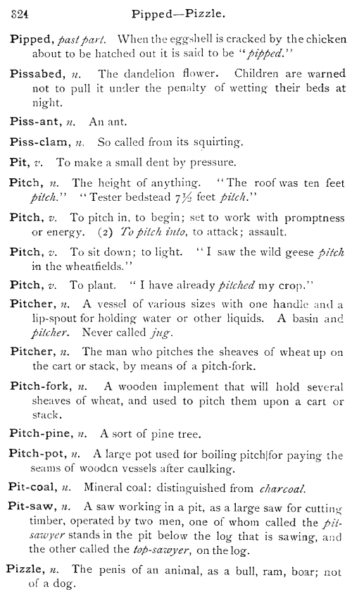

<superEntry>
<entry rend="hang">
<form><orth><b>Pitch,</b></orth></form>
<gramGrp><pos><i>n.</i></pos></gramGrp>
<def>The height of anything.</def>
<eg><q rend="inline">"The roof was ten feet <lb/>
<i>pitch</i>."</q></eg>
<eg><q rend="inline">"Tester bedstead 7½ feet <i>pitch</i>."</q></eg>
</entry>
<entry rend="hang">
<form><orth><b>Pitch,</b></orth></form>
<gramGrp><pos><i>v.</i></pos></gramGrp>
<sense>
<def>To pitch in, to begin; set to work with promptness <lb/>
or energy.</def>
</sense>
<sense n="2">
(2.) <def><i>To pitch into</i>, to attack; assault.</def>
</sense>
</entry>
<entry rend="hang">
<form><orth><b>Pitch,</b></orth></form>
<gramGrp><pos><i>v.</i></pos></gramGrp>
<def>To sit down; to light.</def>
<eg><q rend="inline">"I saw wild geese <i>pitch</i> <lb/>
in the wheatfields."</q></eg>
</entry>
<entry rend="hang">
<form><orth><b>Pitch,</b></orth></form>
<gramGrp><pos><i>v.</i></pos></gramGrp>
<def>To plant.</def>
<eg><q rend="inline">"I have already <i>pitched</i> my crop."</q></eg>
</entry>
</superEntry>
<superEntry>
<entry rend="hang">
<form><orth><b>Pitcher,</b></orth></form>
<gramGrp><pos><i>n.</i></pos></gramGrp>
<def>A vessel of various sizes with one handle and a <lb/>
lip-spout for holding water or other liquids. A basin and <lb/>
<i>pitcher</i>. Never called <i>jug</i>.</def>
</entry>
<entry rend="hang">
<form><orth><b>Pitcher,</b></orth></form>
<gramGrp><pos><i>n.</i></pos></gramGrp>
<def>The man who pitches the sheaves of wheat up on <lb/>
the cart or stack, by means of a pitch-fork.</def>
</entry>
</superEntry>